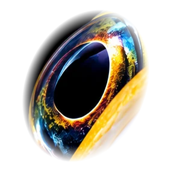
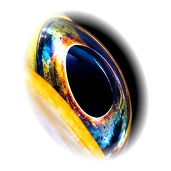

あらすじ閉館後の館内が、
閉館後の館内が、
どこかおかしい。
閉館のチャイムが鳴り、最後のお客さんが帰っていきました。照明の落ちた館内に残ったのは、水槽のポンプの音だけ。
それなのに、昼間とは何かが違う。いるはずの生きものが見当たらない。いないはずの何かが、ガラスの向こうからこちらを見ている。
この水族館は、閉館後もやっぱり、なんか変。
館内に残された手がかりを集めて、その「変」の正体をつきとめてください。
※ ストーリー・コピーは仮のものです


まだ、いる。